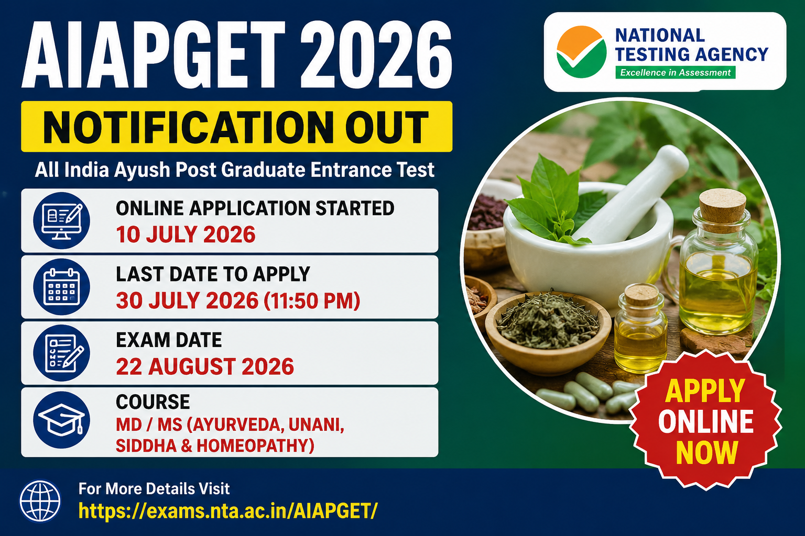

National Testing Agency (NTA) ने AIAPGET 2026 के लिए महत्वपूर्ण संशोधन जारी किया है। अब Compulsory Rotatory Internship (CRI) पूर्ण करने की अंतिम तिथि 31 अगस्त 2026 से बढ़ाकर 31 अक्टूबर 2026 कर दी गई है।
Update Date: 22 July 2026
अगर आप Ayurveda, Unani, Siddha या Homeopathy (AYUSH) में Postgraduate Course (MD/MS) में प्रवेश लेना चाहते हैं, तो आपके लिए बड़ी अपडेट है। National Testing Agency (NTA) ने Academic Session 2026-27 के लिए AIAPGET 2026 (All India Ayush Post Graduate Entrance Test) का आधिकारिक नोटिफिकेशन जारी कर दिया है। इस परीक्षा के माध्यम से देशभर के विभिन्न AYUSH Colleges, Universities तथा Deemed Universities में PG Courses में प्रवेश दिया जाएगा। AIAPGET एक राष्ट्रीय स्तर की प्रवेश परीक्षा है, जिसे NTA आयोजित करता है। ऑनलाइन आवेदन प्रक्रिया 10 जुलाई 2026 से शुरू हो चुकी है तथा उम्मीदवार 30 जुलाई 2026 रात 09:00 बजे तक ऑनलाइन आवेदन कर सकते हैं। आवेदन केवल ऑनलाइन माध्यम से स्वीकार किए जाएंगे। इस लेख में AIAPGET 2026 Notification से जुड़ी सभी महत्वपूर्ण जानकारी जैसे Eligibility, Important Dates, Application Fee, Exam Pattern, Required Documents, Selection Process, Admit Card, Result एवं Apply Online Process आसान भाषा में दी गई है।
| Particular | Details |
|---|---|
| Exam Name | AIAPGET 2026 |
| Conducting Authority | National Testing Agency (NTA) |
| Full Form | All India Ayush Post Graduate Entrance Test |
| Courses | MD / MS (Ayurveda, Unani, Siddha & Homeopathy) |
| Application Mode | Online |
| Registration Starts | 10 July 2026 |
| Last Date to Apply | 30 July 2026 (09:00 PM) |
| Official Website | https://exams.nta.ac.in/AIAPGET/ |
NTA ने AIAPGET 2026 के लिए ऑनलाइन आवेदन शुरू कर दिए हैं। इच्छुक उम्मीदवार निर्धारित अंतिम तिथि से पहले आवेदन कर सकते हैं। इस वर्ष आवेदन प्रक्रिया में Aadhaar Authentication, Live Photograph Capture तथा PwBD उम्मीदवारों के लिए UDID Verification जैसी नई सुविधाएं भी शामिल की गई हैं।
AIAPGET 2026 में आवेदन करने वाले उम्मीदवारों के पास संबंधित AYUSH विषय में मान्यता प्राप्त विश्वविद्यालय से Degree होनी चाहिए। उम्मीदवार को Internship संबंधी शर्तें भी पूरी करनी होंगी। विस्तृत पात्रता संबंधित Information Bulletin में दी गई है।
| Course | Required Qualification |
|---|---|
| Ayurveda | BAMS Degree |
| Homeopathy | BHMS Degree |
| Unani | BUMS Degree |
| Siddha | BSMS Degree |
| Category | Application Fee |
|---|---|
| General | ₹2700 |
| General-EWS / OBC-NCL | ₹2450 |
| SC / ST / PwBD / Third Gender | ₹1800 |
आवेदन शुल्क केवल Online Mode (Debit Card, Credit Card, Net Banking, UPI) के माध्यम से जमा किया जा सकता है। आवेदन शुल्क वापस नहीं किया जाएगा।
| Particular | Details |
|---|---|
| Mode of Exam | Computer Based Test (CBT) |
| Question Type | Multiple Choice Questions (MCQs) |
| Total Questions | 120 |
| Total Marks | 480 Marks |
| Duration | 02 Hours |
| Marking Scheme | +4 for Correct Answer, -1 for Wrong Answer |
| Medium | English & Hindi (As Applicable) |
AIAPGET 2026 आवेदन करते समय उम्मीदवारों को निम्नलिखित दस्तावेज तैयार रखने चाहिए ताकि आवेदन प्रक्रिया बिना किसी समस्या के पूरी हो सके।
AIAPGET 2026 में उम्मीदवारों का चयन Computer Based Test (CBT) में प्राप्त अंकों के आधार पर किया जाएगा। परीक्षा के बाद NTA Result एवं Merit List जारी करेगा, जिसके आधार पर संबंधित Counseling Authority द्वारा Admission प्रक्रिया पूरी की जाएगी।
अंतिम दिनों में वेबसाइट पर अधिक ट्रैफिक होने के कारण सर्वर धीमा हो सकता है। इसलिए उम्मीदवारों को सलाह दी जाती है कि वे अंतिम तिथि का इंतजार किए बिना समय रहते आवेदन प्रक्रिया पूरी कर लें। आवेदन सफलतापूर्वक जमा होने के बाद उसका प्रिंट आउट एवं भुगतान रसीद भविष्य के लिए सुरक्षित रखें।
| Particular | Link |
|---|---|
| Official Notification | Download Notification |
| Apply Online | Apply Online |
| Official Website | Visit Official Website |
ऑनलाइन आवेदन प्रक्रिया 10 जुलाई 2026 से शुरू हो चुकी है।
उम्मीदवार 30 जुलाई 2026 (रात 11:50 बजे तक) ऑनलाइन आवेदन कर सकते हैं।
AIAPGET 2026 परीक्षा 22 अगस्त 2026 को Computer Based Test (CBT) मोड में आयोजित की जाएगी।
हाँ, AIAPGET 2026 पूरी तरह Computer Based Test (CBT) मोड में आयोजित की जाएगी।
Admit Card परीक्षा से कुछ दिन पहले NTA की आधिकारिक वेबसाइट पर जारी किया जाएगा।
Disclaimer : इस लेख में दी गई जानकारी National Testing Agency (NTA) द्वारा जारी आधिकारिक AIAPGET 2026 Notification एवं Information Bulletin के आधार पर तैयार की गई है। आवेदन करने से पहले उम्मीदवार आधिकारिक Notification एवं Information Bulletin को ध्यानपूर्वक अवश्य पढ़ें। अंतिम निर्णय NTA द्वारा जारी आधिकारिक निर्देशों के अनुसार ही मान्य होगा।